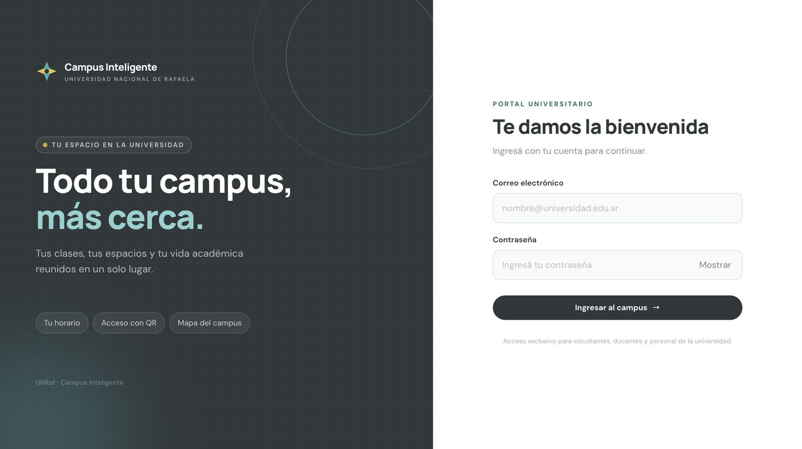
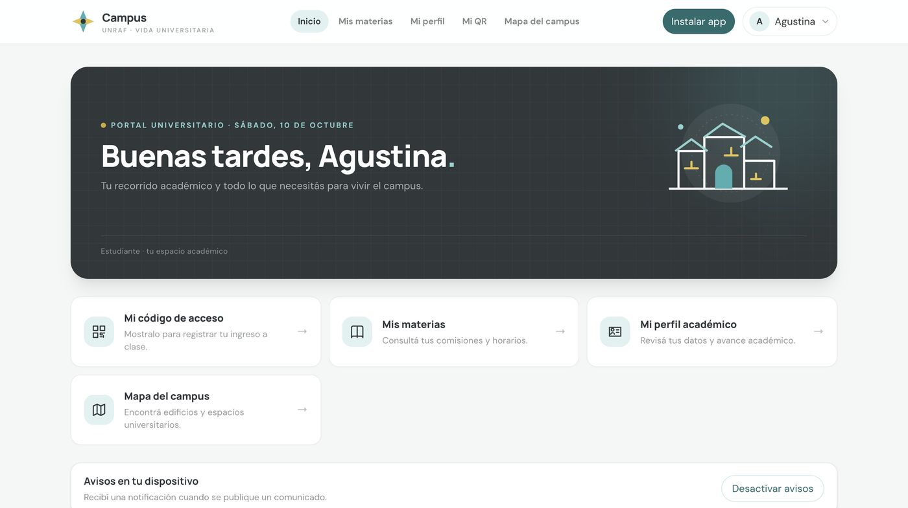
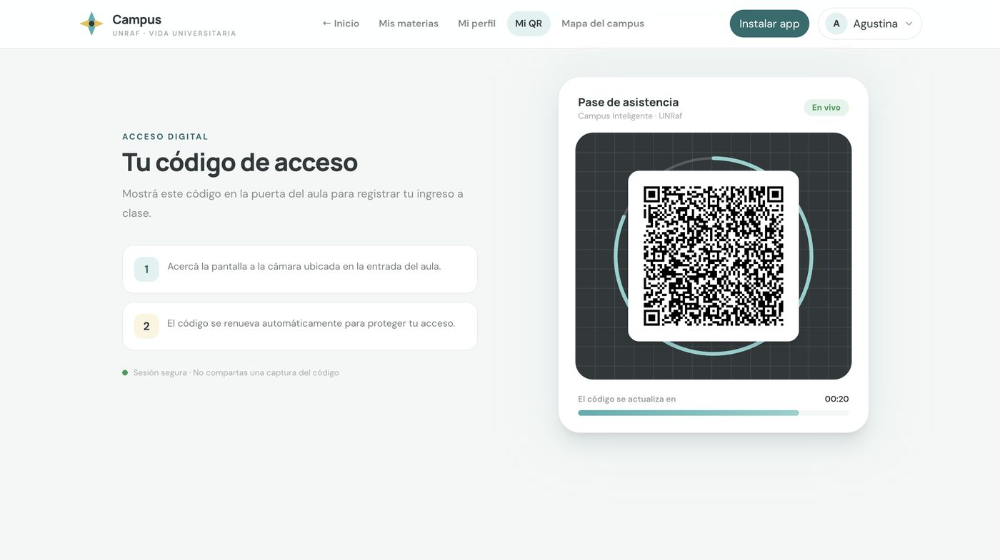
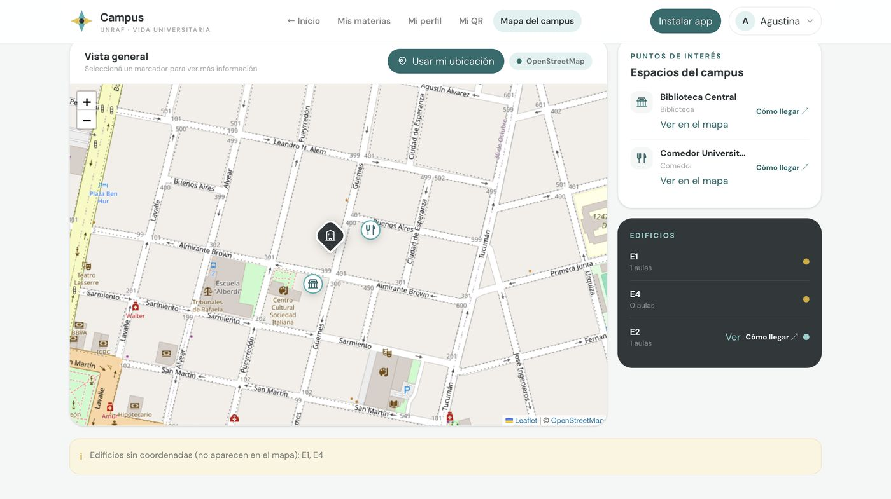
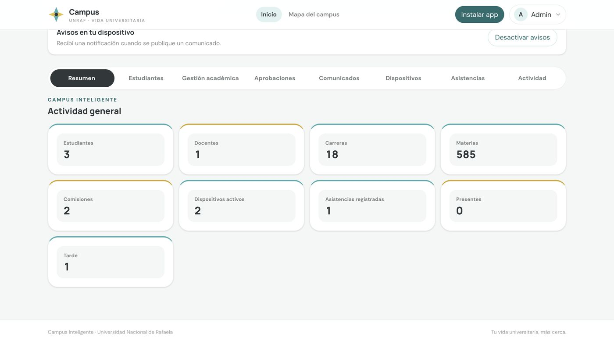
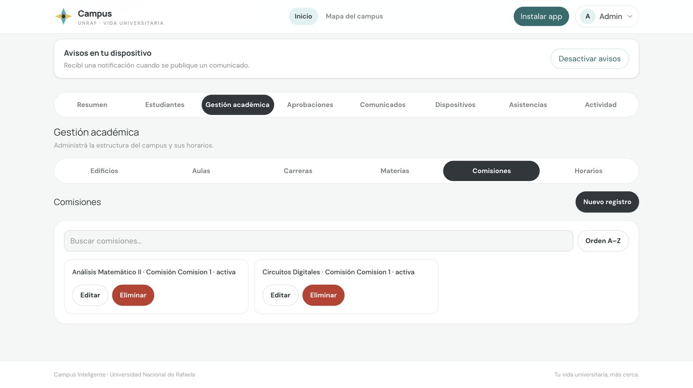
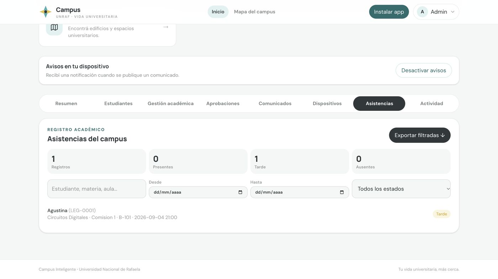
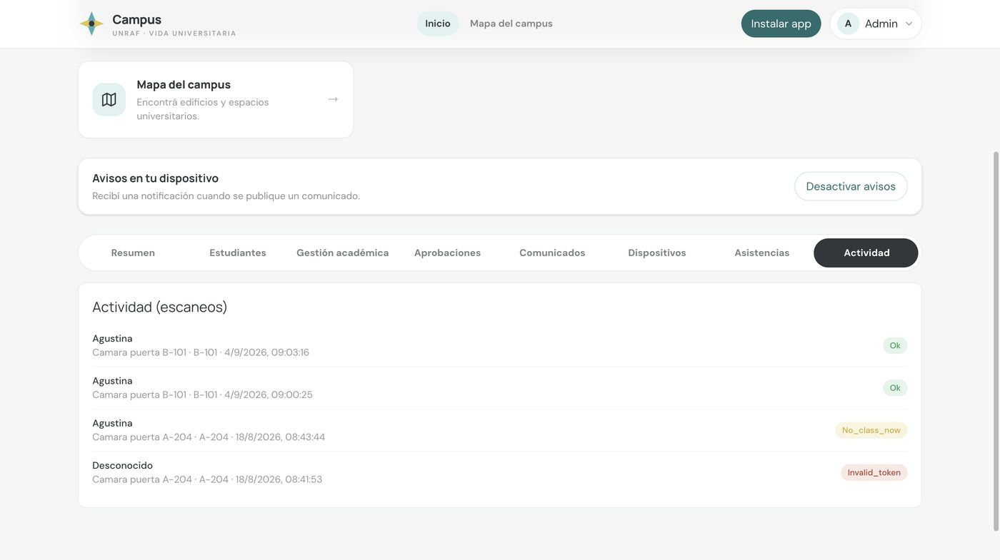

Campus Inteligente
Sistema web para gestionar un campus y tomar asistencia por QR.
- El estudiante muestra un QR dinámico desde su celular y una cámara fija en la puerta del aula lo lee para registrar la asistencia.
- Backend en Python con autenticación JWT y base de datos PostgreSQL.
- Interfaz responsive, probada en un celular real, con foco en que se vea profesional y dinámica.















